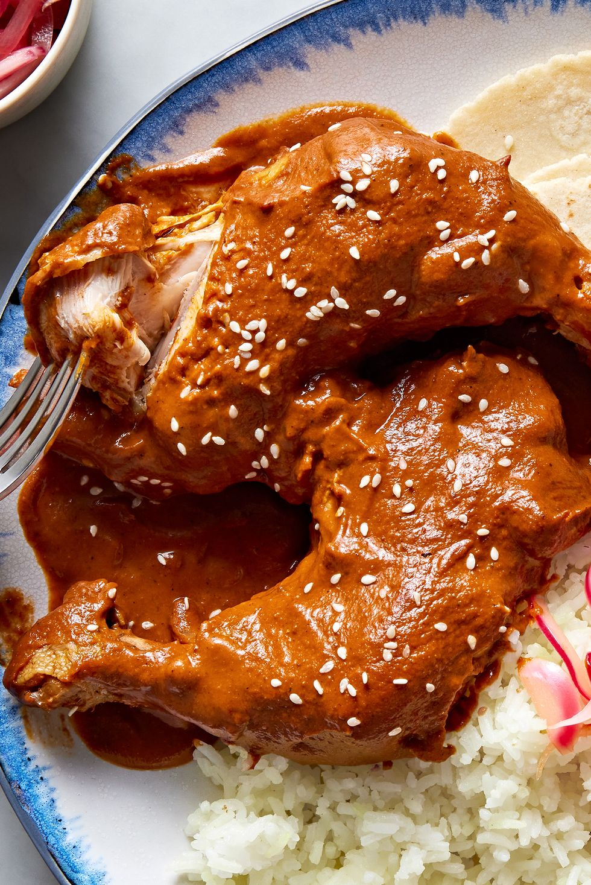

Chicken Mole

PHOTO: RACHEL VANNI; FOOD STYLING: BROOKE CAISON
Description
Pollo mole is a dish that may be easily intimidating, but the truth is it's very straightforward.
Mole (meaning “sauce” in Nahuatl) is a traditional Mexican sauce that can come in many different ways,
but they will have some things in common, like dried chiles, chocolate, bread, and spices.
Ingredient
- 4 c. low-sodium chicken broth
- 2 c. orange juice
- 1 head of garlic, halved through the equator, plus 8 cloves garlic, finely chopped
- 3 bay leaves
- 2 tbsp. kosher salt
- 1 (3 1/2- to 4-lb.) whole chicken, quartered
- 4 tbsp. extra-virgin olive oil, divided
- 1 medium yellow onion, finely chopped
- 4 plum tomatoes, finely chopped
- 2 tbsp. tomato paste
- 6 dried guajillo chiles, stems, seeds, and ribs removed
- 3 dried pasilla chiles, stems, seeds, and ribs removed
- 2 (6") corn tortillas
- 3 tbsp. raw sesame seeds, plus more for serving
- 1 tsp. coriander seeds
- 1 tsp. cumin seeds
- 1 tsp. whole black peppercorns
- 1 oz. French bread, torn into pieces (about 2 c.)
- 1/4 c. raisins
- 2 oz. dark chocolate (90% cacao), chopped
Steps
-
In a large pot over high heat, bring stock, orange juice, head of garlic,
bay leaves, salt, and 2 cups water to a boil. Add chicken, reduce heat to
medium-low, and bring to a simmer. Cook, stirring occasionally, until an instant-read
thermometer inserted into thickest part of chicken registers 160°, about 10 minutes.
Transfer chicken to a plate. Strain stock through a fine-mesh sieve into a large bowl;
discard solids.
-
Meanwhile, in a large shallow pan over medium-low heat, heat 2 tablespoons oil.
Add onion and chopped garlic and cook, stirring occasionally, until onion is translucent
and softened, about 10 minutes. Add tomatoes and increase heat to medium. Cook, mashing
down on tomatoes, until softened and almost smooth, about 10 minutes.
Add tomato paste and cook, stirring, until brick red, about 1 minute more. Let cool slightly.
- Transfer tomato mixture to a blender. Blend until smooth, about 1 minute. Transfer to a medium bowl;
wipe out blender.
-
In same pan over medium-high heat, heat remaining 2 tablespoons oil. Toast chiles, turning occasionally,
until browned, about 1 minute. Transfer to a large bowl.
-
In same pan over medium-high heat, toast tortillas, turning once, until dark brown, about 1 minute per side.
Transfer to same bowl.
-
In same pan over medium-high heat, toast sesame seeds, coriander, cumin, and black pepper, stirring frequently,
until fragrant, about 1 minute. Transfer to same bowl.
-
Add bread, raisins, and 4 cups stock to bowl and stir to combine. Let sit 10 minutes. Transfer to blender
and blend on high speed until smooth, about 3 minutes.
-
Transfer sauce, chocolate, tomato mixture, and chicken to a large pot. Bring to a boil, then reduce heat to low
to bring to a simmer. Cook, stirring occasionally, until sauce is thickened, chocolate is melted, and chicken is
warmed through, about 15 minutes.
-
Divide chicken among plates. Spoon sauce over. Top with sesame seeds.